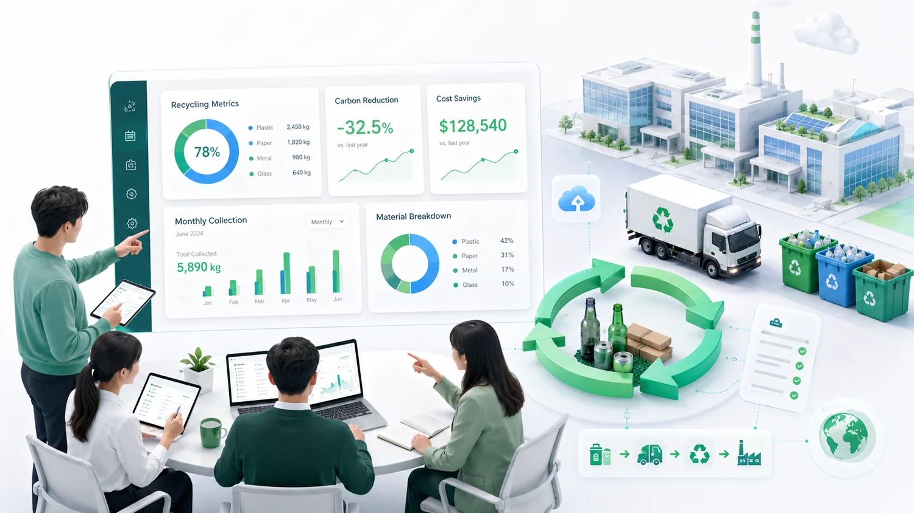
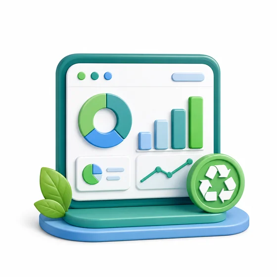
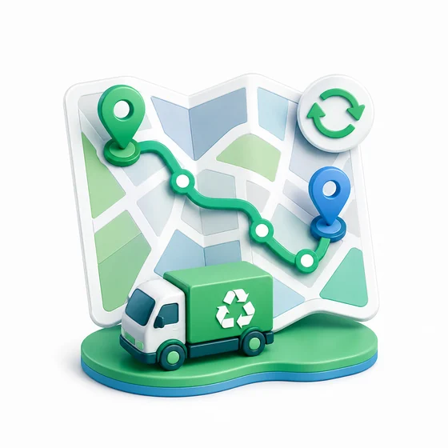

기업 업무홈
ESG 관리ESG·정기수거 관리
의 사업장 수거·폐기비 절감·성과보고를 관리합니다.

월간 수거량, 비용절감, 탄소절감 추정 리포트
정기수거 데이터를 ESG 리포트와 보호자료센터로 연결합니다.

월간 리포트
이번 달 5,890kg 처리

최적노선
ESG Plus 플랜에서 사용
보호자료
보고서·증빙자료 접근 제어
의 사업장 수거·폐기비 절감·성과보고를 관리합니다.

정기수거 데이터를 ESG 리포트와 보호자료센터로 연결합니다.

이번 달 5,890kg 처리

ESG Plus 플랜에서 사용
보고서·증빙자료 접근 제어